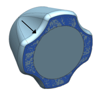
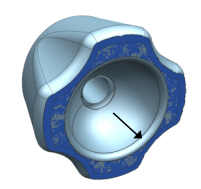
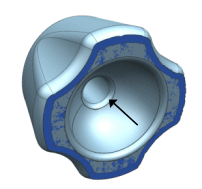
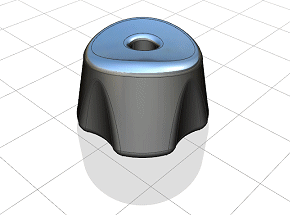

To complete the part, three more face blends are necessary.
A face blend between the planar fit surface and the outside knob surfaces.

A face blend between the planar fit surface and the open spherical fit surface.

A face blend between the fit sphere surface and the interior of the cylindrical fit surface that makes up the hole.

For the face blend between the planar fit surface and the outside knob surfaces:
Make sure Face Rule is set to Tangent Faces when selecting the outside surface of the knob, so all faces are selected.
Use a Radius value of 10.
For the face blend between the planar fit surface and the open spherical fit surface, use a Radius value of 5.
For the face blend between the open spherical fit surface and the interior cylindrical fit surface, use a Radius value of 5.
Hide all remaining facet bodies.

Close the part.